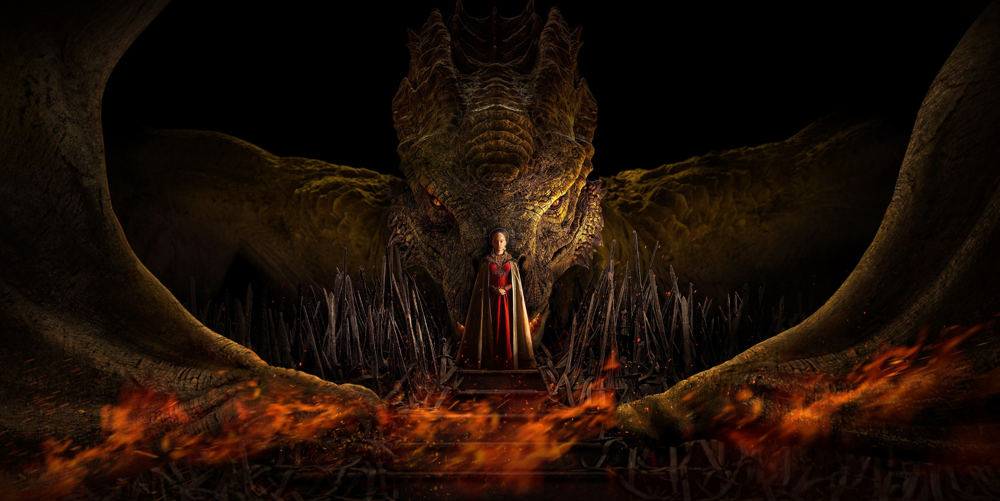

Synopsis
Based on material from George R. R. Martin’s book Fire & Blood, House of the Dragon tells the story of the Dance of Dragons and the events leading up to the brutal civil war. King Viserys I Targaryen rules over an unprecedented time of peace, but questions about his succession threaten to send the realm into chaos. Will Princess Rhaenyra Targaryen sit on the Iron Throne, or is Westeros not ready for a queen?
Review
The first episode is perfect! The central theme of this series is SUCCESSION and the issue of male primogeniture - and this is beautifully set up with the opening scene showing the Great Council in 101 AC. A short intro but important to understand why Rhaneyra being chosen as heir spells a dark shadow that will carry through the episodes to come.
As a book reader, I was greatly surprised in a positive way by how the showrunners enriched the book either by adding extra stories or elaborating on one aspects which were not in the book.
Great acting from all casts especially Matt Smith and Milly Alcock. Smith’s performance brings many nuances to the complex Daemon Targaryen.
Art direction, costumes, cinematography are great. This era is supposed to be the height of the Targaryen’s power and one of the opening shots shows King’s Landing from aerial view (dragon rider’s POV) which I think is very effective and grand.
Two dragons are shown in the first episode and even though i read some people complained about why they are different from the dragons in GoT - I think they are great. Each dragon is so distinctively different and has characters of its own. Mind you they said there will be 15 dragons and being able to distinguish one from another will be an enjoyable watching experience.
Lastly, the music scores from the great Ramin Djawadi totally brings you back to Westeros.